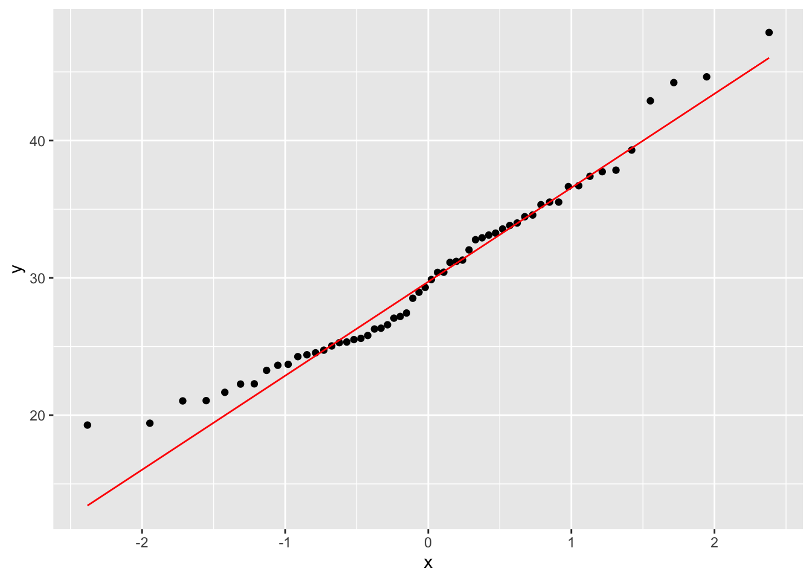
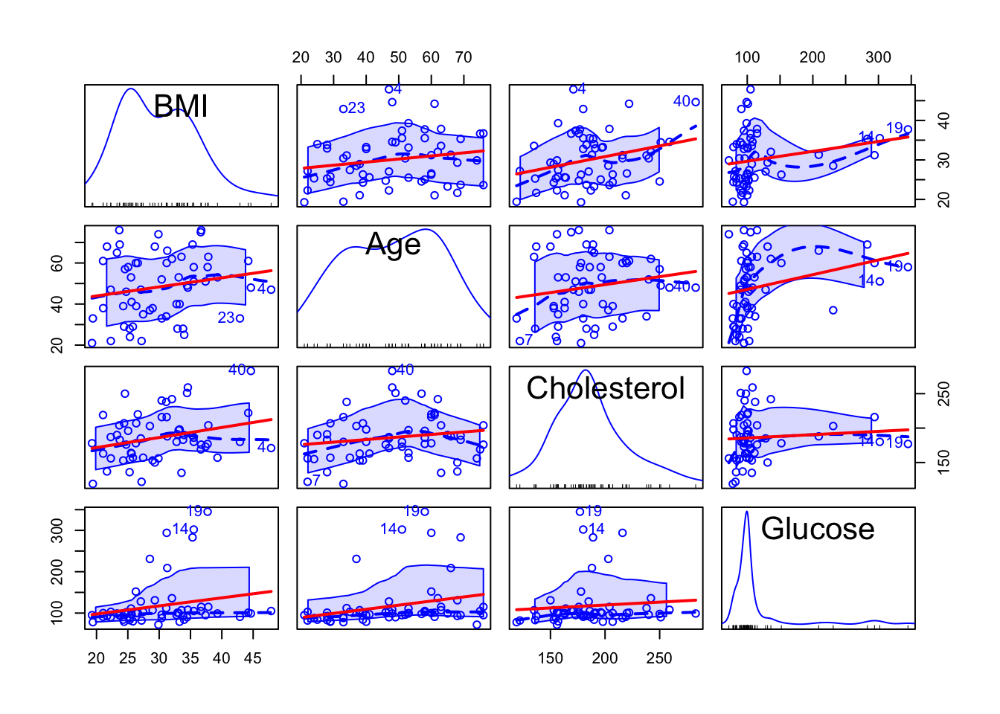
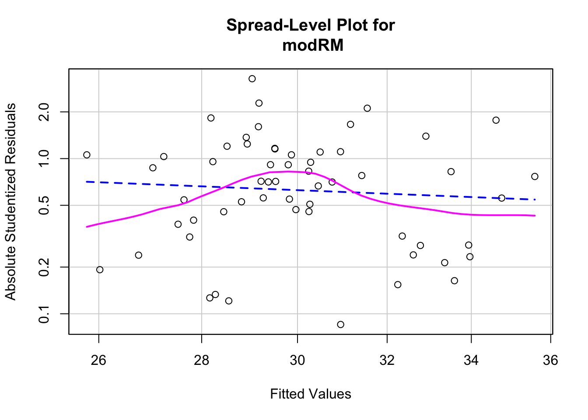
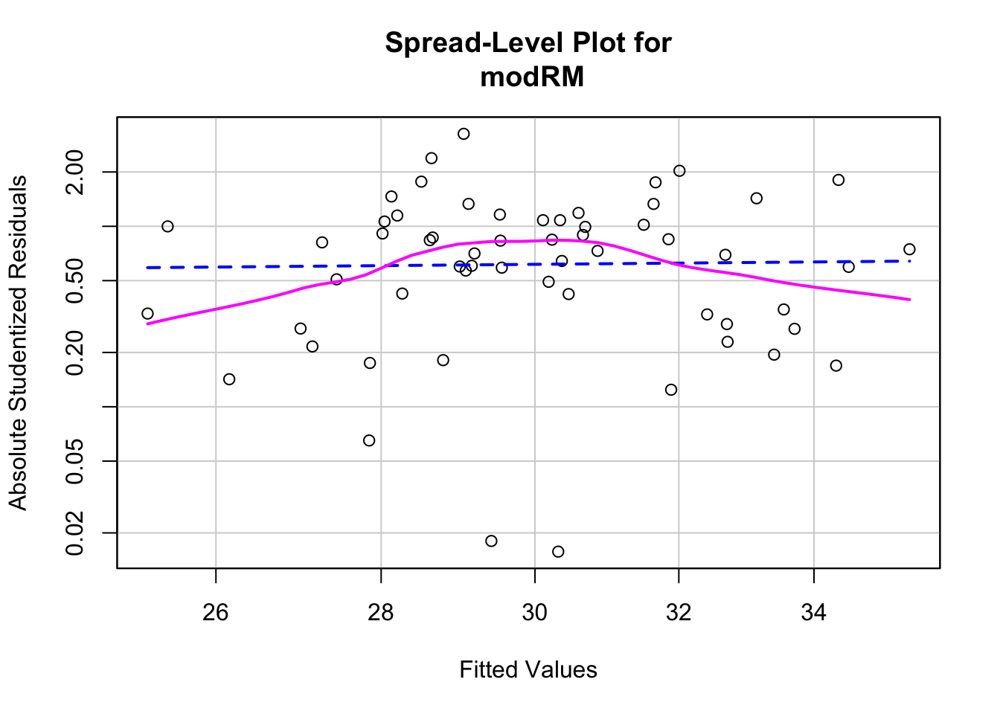
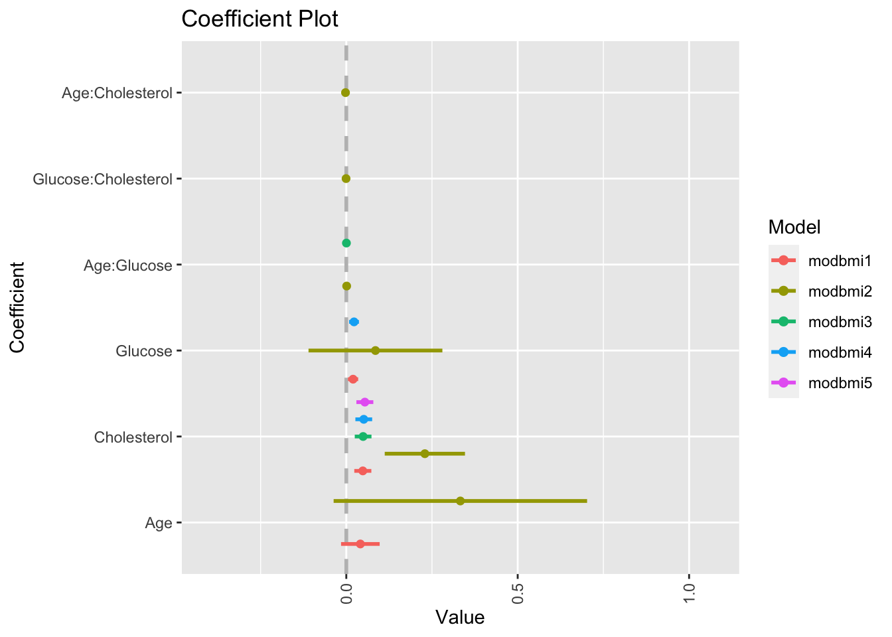
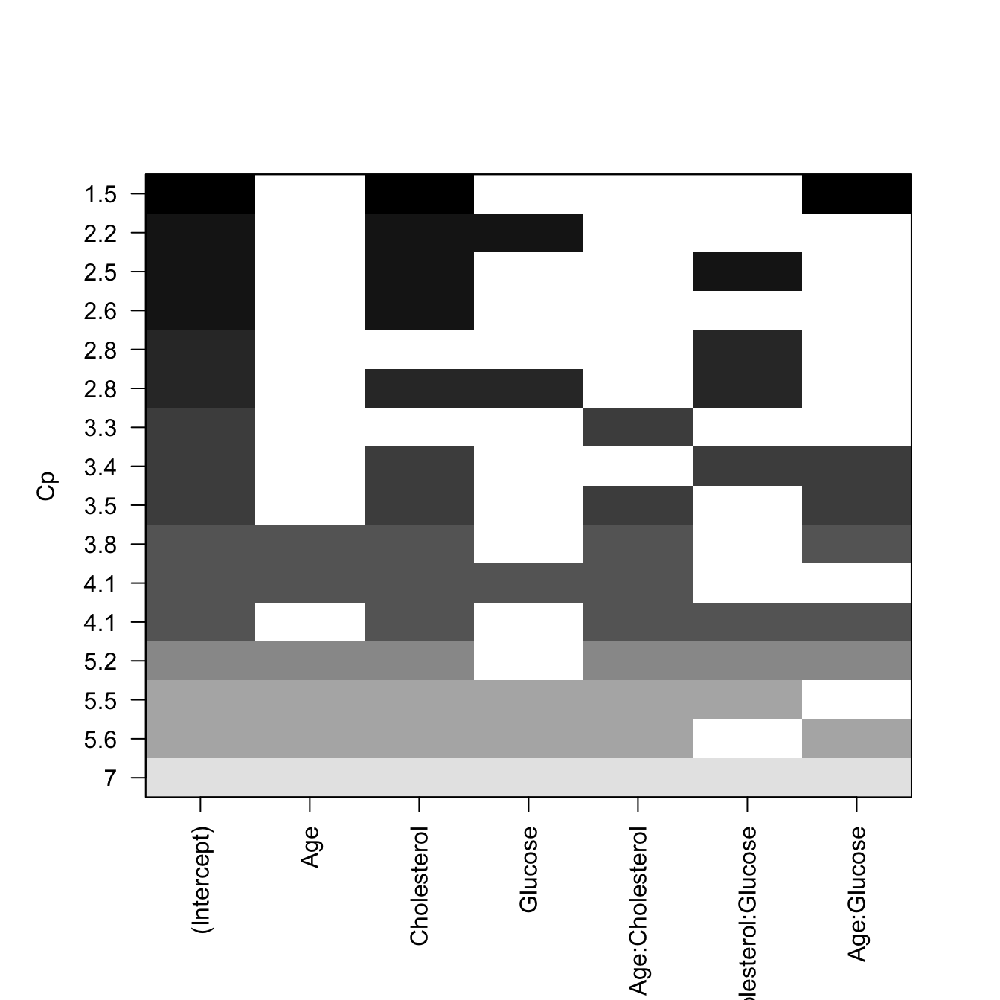
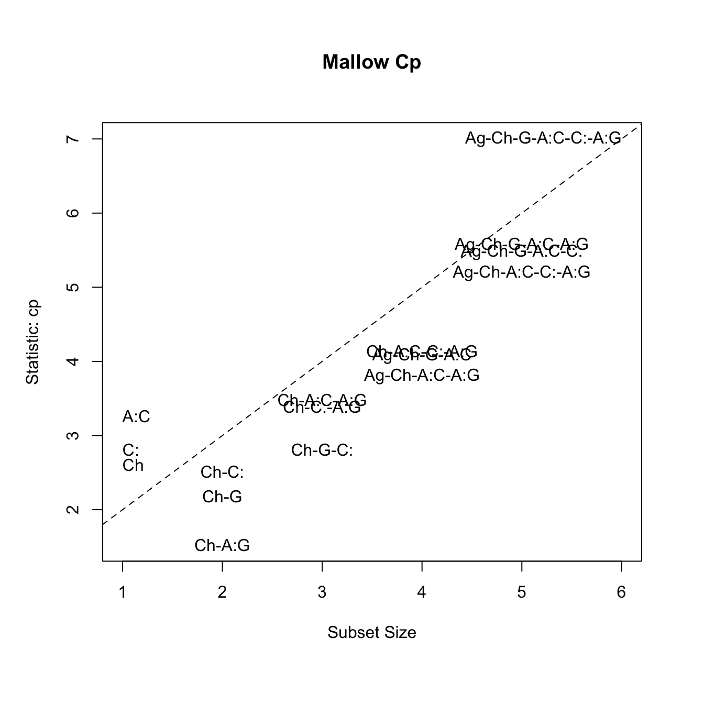

Regresion Multiple


Regresión Múltiple
Lista de paquetes a instalar
## Loading required package: pacmanpacman::p_load(car, EnvStats,tidyverse, coefplot, leaps,
rmarkdown, ggplot2, MASS, multcomp, effects,
gplots,agricolae, caret )
# Activar los paquetes
library(ggversa)
library(knitr)
library(tidyverse)
library(coefplot)
library(leaps)
library(EnvStats)
library(MASS)
library(car) # Companion to applied regression
library(ggplot2) # Data Visualization
library(effects)
library(gplots) Lista de archivos a usar
Los siguientes archivos deben estar disponible en su directorio de trabajo de R:
Objetivos Generales
- Conocer y aplicar los métodos disponibles en R para obtener los parámetros de modelos de regresión múltiple, evaluar su idoneidad para describir los datos, e interpretar su significado.
Regresión Lineal Múltiple
Cuando tenemos más de una variable predictora (“independiente”), la regresión lineal simple viene a ser una regresión múltiple. El objetivo es de simultaneamente evaluar múltiples variables independiente. La idea es de determinar cual impacto cada una de las variables independiente tiene sobre la variable dependiente considerando que hay otras variables independientes.
La \(\alpha\) es el intercepto, las \(B_i\) son los coeficientes para cada variable independientes y el \(\epsilon\) es el error.
\[Y_j=\alpha+\beta_1X_{1j}+\beta_2X_{2j}+...+\beta_nX_{nj}+\epsilon\]
Ejemplo 1 y Datos
Usaremos como ejemplo los datos bmi en el archivo mod_empiricos.xlsx. Estos son datos de individuos adultos entre 21 y 79 años, con las siguientes variables: BMI, índice de masa corporal (\(kg/m^{2}\)); Age, edad (años); Cholesterol, niveles de colesterol en sangre, (\(mg/dL\)); Glucose, niveles de glucosa en la sangre, (\(mg/dL\)).
Para leer los datos emplearemos el siguiente código (obtenido del menú Import Dataset/From Excel):
library(readxl)
reg.multiple <- read_excel("Data/mod_empiricos.xlsx", sheet = "bmi")
# para ver las primeras seis filas de datos
head(reg.multiple)## # A tibble: 6 x 4
## BMI Age Cholesterol Glucose
## <dbl> <dbl> <dbl> <dbl>
## 1 19.3 21 178 95
## 2 24.5 57 250 98
## 3 24.7 46 176 102
## 4 47.9 47 171 105
## 5 44.2 61 222 101
## 6 29.9 74 156 72Pruebas de supuestos para regresión paramétrica usando el método de mínimos cuadrados (OLS, ordinary least square)
- Normalidad: Gráficamente: Q-Q plot; Estadísticamente: prueba de Shapiro & Wilk (shapito.test) o Anderson-Darling (en el paquete nortest88 y la función ad_test).
- Independencia: los valores de \(Y_j\) son independientes entre si, lo asumimos (no hay autocorrelación).
- Linealidad: relación lineal entre variable dependiente y cada una de las independientes; gráficas individuales. Puede arreglarse con transformación; prueba de Box Tidwell.
- Homocedasticidad: varianza de la variable dependiente (residuales) no varía con los valores de las variables independientes; gráfica de los residuales.
- Multicolinealidad: las variables independientes no deben estar correlacionadas entre si.
Normalidad
- Evaluación gráfica de normalidad de la variable dependiente. Se observa que la mayoría de los datos son muy cerca de la linea, por consecuencia se puede asumir que la variable dependiente tiene una distribución normal.

- Prueba estadística de normalidad Shapiro & Wilk (\(H_0:distribución\enspace normal\)) . En este caso tanto la prueba de Shapiro_Wilk (p > 0.07) y la Anderson-Darling (p > 0.12) tiene el mismo resultado, que uno acepta la hipótesis nula, que no hay evidencia que los datos difiere de una distribución normal.
##
## Shapiro-Wilk normality test
##
## data: reg.multiple$BMI
## W = 0.96315, p-value = 0.07547##
## Anderson-Darling normality test
##
## data: reg.multiple$BMI
## A = 0.58635, p-value = 0.1209Autocorrelación
La prueba de Durbin-Watson nos permite evaluar si ocurre autocorrelación entre los valores residuales de la variable dependiente. Por ejemplo, una variable que depende del tiempo, presenta autocorrelación. La \(H_0\) es que la autocorrelación en los residuales del modelo es 0.
Prueba de Durbin-Watson para autocorrelación. Pasos
Construir el modelo
Aplicar la prueba de autocorrelación sobre el modelo
La prueba de Durbin-Watson tiene un valor de p > 0.05, por consecuencia no hay evidencia que hay correlación en los datos.
library(car)
model <- lm(BMI ~ Age + Cholesterol + Glucose, data = reg.multiple)
dbt <- durbinWatsonTest(model, simulate = TRUE)
dbt## lag Autocorrelation D-W Statistic p-value
## 1 0.06609505 1.823275 0.478
## Alternative hypothesis: rho != 0Linealidad del modelo
- Prueba de Box Tidwell para linealidad. Esta prueba es para evaluar si el modelo sigue un patrón lineal. Las estimaciones de máxima de verosimilitud de los parámetros de transformación se calculan mediante el método de Box y Tidwell (1962), que suele ser más eficaz que utilizar una rutina general de mínimos cuadrados no lineal para este problema. La hipótesis nula es que el patrón de relación entre las variables dependientes y indepedientes sean lineal.
Se observa que el valor de p >0.05 para cada variable sugiriendo que no hay evidencia que la relación sea diferente de una regresión lineal.
## MLE of lambda Score Statistic (z) Pr(>|z|)
## Age -19.8117 -0.8984 0.3690
## Cholesterol 20.2797 0.1879 0.8509
## Glucose -2.3134 0.1057 0.9158
##
## iterations = 10Multicolinealidad
- Matriz de correlación con la correlaciones de Pearson (asume distribución normal) y gráficas de puntos con líneas de regresión. En este gráfico se observa que el patrón entre cada una de las variables independientes. Con esta se determina si hay alta colinearidad entre las variable.
Para dar un ejemplo sencillo si hubiese dos variables que tienen una correlación bien alta entre las dos, las dos variables entonces están incluyendo un componente variación compartido y añadir las dos variables a un modelo de regresión múltiples no seria correcto, porque las dos variables explican la misma variación. En este caso lo que se observa es que BMI y el colesterol tiene una correlación de 28%.
## BMI Age Cholesterol Glucose
## BMI 1.0000000 0.1863333 0.28110580 0.22115998
## Age 0.1863333 1.0000000 0.16966704 0.26705577
## Cholesterol 0.2811058 0.1696670 1.00000000 0.08266412
## Glucose 0.2211600 0.2670558 0.08266412 1.00000000#gráfica de regresiones en parejas, con línea de regresión
scatterplotMatrix(reg.multiple, ~ Age + Cholesterol + Glucose,
smooth = list(lty = 2), id = TRUE,
regLine = list(lty = 1, col = "red"),
col = "blue")## Warning in applyDefaults(legend, defaults = list(coords = NULL), type =
## "legend"): unnamed legend arguments, will be ignored
Modelos de regresión lineal múltiple
A continuación se calculan los parámetros de diversos modelos de regresión, y se incluye una prueba de homocedasticidad (homogeneidad de la varianza) para cada modelo.
Modelo completo (todas las variables)
##
## Call:
## lm(formula = BMI ~ Age + Cholesterol + Glucose, data = reg.multiple)
##
## Residuals:
## Min 1Q Median 3Q Max
## -10.6255 -4.5473 -0.8179 3.7439 18.8116
##
## Coefficients:
## Estimate Std. Error t value Pr(>|t|)
## (Intercept) 16.81510 5.07180 3.315 0.00164 **
## Age 0.04103 0.05631 0.729 0.46939
## Cholesterol 0.04819 0.02487 1.938 0.05791 .
## Glucose 0.01974 0.01493 1.322 0.19188
## ---
## Signif. codes: 0 '***' 0.001 '**' 0.01 '*' 0.05 '.' 0.1 ' ' 1
##
## Residual standard error: 6.34 on 54 degrees of freedom
## Multiple R-squared: 0.127, Adjusted R-squared: 0.07855
## F-statistic: 2.62 on 3 and 54 DF, p-value: 0.06008## [1] "AIC = 384.68"# prueba de homocedasticidad (Non-constant Variance Score Test)
# Ho:la varianza es constante en el ámbito de la predicción de Y
ncvTest(modRM)## Non-constant Variance Score Test
## Variance formula: ~ fitted.values
## Chisquare = 0.02932531, Df = 1, p = 0.86403
##
## Suggested power transformation: 0.757141Modelo eliminando la variable Age, por ser la menos correlaciona con BMI, y tener la mayor correlación con Glucose
##
## Call:
## lm(formula = BMI ~ Cholesterol + Glucose, data = reg.multiple)
##
## Residuals:
## Min 1Q Median 3Q Max
## -10.125 -4.748 -1.134 3.321 18.832
##
## Coefficients:
## Estimate Std. Error t value Pr(>|t|)
## (Intercept) 17.95236 4.80502 3.736 0.000446 ***
## Cholesterol 0.05098 0.02447 2.083 0.041902 *
## Glucose 0.02254 0.01437 1.569 0.122449
## ---
## Signif. codes: 0 '***' 0.001 '**' 0.01 '*' 0.05 '.' 0.1 ' ' 1
##
## Residual standard error: 6.313 on 55 degrees of freedom
## Multiple R-squared: 0.1185, Adjusted R-squared: 0.08641
## F-statistic: 3.696 on 2 and 55 DF, p-value: 0.0312## [1] "AIC = 383.25"## Non-constant Variance Score Test
## Variance formula: ~ fitted.values
## Chisquare = 0.2490362, Df = 1, p = 0.61775
##
## Suggested power transformation: 1.818741Modelo con interacción entre Age y Glucose
Para denotar interacción entre variables se usa el símbolo ( : ) Para incluir las variables solas y su interacción se utiliza el símbolo ( * )
##
## Call:
## lm(formula = BMI ~ Cholesterol + Glucose:Age, data = reg.multiple)
##
## Residuals:
## Min 1Q Median 3Q Max
## -10.5225 -4.6283 -0.8796 3.6945 18.8840
##
## Coefficients:
## Estimate Std. Error t value Pr(>|t|)
## (Intercept) 1.879e+01 4.645e+00 4.044 0.000165 ***
## Cholesterol 4.906e-02 2.441e-02 2.010 0.049322 *
## Glucose:Age 3.662e-04 2.057e-04 1.780 0.080625 .
## ---
## Signif. codes: 0 '***' 0.001 '**' 0.01 '*' 0.05 '.' 0.1 ' ' 1
##
## Residual standard error: 6.274 on 55 degrees of freedom
## Multiple R-squared: 0.1292, Adjusted R-squared: 0.09751
## F-statistic: 4.079 on 2 and 55 DF, p-value: 0.02229## [1] "AIC = 382.54"## Non-constant Variance Score Test
## Variance formula: ~ fitted.values
## Chisquare = 0.07666205, Df = 1, p = 0.78187
##
## Suggested power transformation: 0.9950719Selección automática de modelo - método “stepwise”
Existen métodos para seleccionar automáticamente el mejor modelo, a base de estadísticos indicadores, y que conlleva un procedimiento iterativo. Uno de estos procedimientos es conocido como ‘stepwise’ (por pasos), y aunque no es el más aceptado en la actualidad, ha sido muy usado y es una buena manera de ilustrar el procedimiento, usando nuestros datos.
En este procedimiento el proceso de selección se basa en mantener el modelo con el menor valor del estadístico AIC (Akaike Information Criterion), que indica el modelo con la menor pérdida de información y mayor simplicidad. En el proceso se parte de un modelo nulo (no efecto de predictores) y hasta un modelo muy complejo, incluyendo interacciones. Las variables se incluyen y se quitan, y cada vez se recalcula AIC, hasta obtener el modelo que mantiene el mínimo valor de AIC.
#formulación de un modelo nulo y un modelo completo
modNulo <- lm(BMI ~ 1, data = reg.multiple)
modFull <- lm(BMI ~ Cholesterol*Glucose + Age*Cholesterol + Age*Glucose,
data = reg.multiple)
#procedimiento stepwise
bmistep <- step(modNulo,
scope = list(lower=modNulo, upper=modFull,
direction="both"))## Start: AIC=219.97
## BMI ~ 1
##
## Df Sum of Sq RSS AIC
## + Cholesterol 1 196.462 2289.8 217.19
## + Glucose 1 121.605 2364.6 219.06
## + Age 1 86.322 2399.9 219.92
## <none> 2486.2 219.97
##
## Step: AIC=217.19
## BMI ~ Cholesterol
##
## Df Sum of Sq RSS AIC
## + Glucose 1 98.063 2191.7 216.66
## <none> 2289.8 217.19
## + Age 1 49.203 2240.6 217.93
## - Cholesterol 1 196.462 2486.2 219.97
##
## Step: AIC=216.66
## BMI ~ Cholesterol + Glucose
##
## Df Sum of Sq RSS AIC
## <none> 2191.7 216.66
## + Cholesterol:Glucose 1 55.387 2136.3 217.17
## - Glucose 1 98.063 2289.8 217.19
## + Age 1 21.337 2170.3 218.09
## - Cholesterol 1 172.920 2364.6 219.06##
## Call:
## lm(formula = BMI ~ Cholesterol + Glucose, data = reg.multiple)
##
## Residuals:
## Min 1Q Median 3Q Max
## -10.125 -4.748 -1.134 3.321 18.832
##
## Coefficients:
## Estimate Std. Error t value Pr(>|t|)
## (Intercept) 17.95236 4.80502 3.736 0.000446 ***
## Cholesterol 0.05098 0.02447 2.083 0.041902 *
## Glucose 0.02254 0.01437 1.569 0.122449
## ---
## Signif. codes: 0 '***' 0.001 '**' 0.01 '*' 0.05 '.' 0.1 ' ' 1
##
## Residual standard error: 6.313 on 55 degrees of freedom
## Multiple R-squared: 0.1185, Adjusted R-squared: 0.08641
## F-statistic: 3.696 on 2 and 55 DF, p-value: 0.0312Comparación de modelos
Gráfica de coeficientes
Una manera de comparar visualmente modelos (en realidad sus coeficientes) es usar el paquete coefplot, en conjunto con ggplot2, para crear una gráfica de los coeficientes estimados de cada variable (sola o de interacción), en cada modelo y detectar los que son diferentes de 0, y los modelos que los contienen.
library(ggplot2)
library(coefplot)
#cálculo para todos los modelos
modbmi1 <- lm(BMI ~ Age + Cholesterol + Glucose, data=reg.multiple)
modbmi2 <- lm(BMI ~ Age*Glucose + Cholesterol*Glucose + Age*Cholesterol, data=reg.multiple)
modbmi3 <- lm(BMI ~ Cholesterol + Age:Glucose, data=reg.multiple)
modbmi4 <- lm(BMI ~ Cholesterol + Glucose, data=reg.multiple)
modbmi5 <- lm(BMI ~ Cholesterol, data = reg.multiple)
#comparando coeficientes de todos los modelos
multiplot(modbmi1, modbmi2, modbmi3, modbmi4, modbmi5, pointSize = 2, intercept=FALSE)
Selección de modelo usando R-cuadrado ajustado y Mallow’s Cp para mejores modelos
El estadístico \(R^2\) es la cantidad de varianza en la respuesta (variable dependiente) producido por las variables predictoras, mediante el modelo, por lo tanto constituye una buena manera de medir la capacidad del modelo para “explicar” los datos. Sin embargo, en un modelo de regresión múltiple, el \(R^2\) aumenta al aumentar el número de predictores, lo cual conlleva a sobrestimar la “calidad” del modelo, con un número excesivo de variables. Usando el \(R^2ajustado\) se toma en cuenta el número de parámetros en el modelo, por lo tanto es una medida más realista del ajuste al modelo.
El estadístico de Mallow, \(C_p\), es otro indicador para seleccionar el mejor modelo en una regresión múltiple; funciona de manera similar al AIC, y sirve para evitar incluir parámetros en exceso en el modelo. La regla general es escoger el modelo con el número de parámetros, en el cual el valor de \(C_p\) sea cercano (pero menor) al número de parámetros más 1.
library(leaps)
modSS <- regsubsets(BMI ~ Age*Cholesterol + Cholesterol*Glucose + Age*Glucose, data = reg.multiple, nbest = 3, intercept = TRUE)
# gráfica para R^2 ajustado
plot(modSS, scale="adjr2")

# otra forma de visualizar Cp
library(car)
## Mallow Cp
mallowCp <-
subsets(modSS, statistic="cp", legend = FALSE, min.size = 1, main = "Mallow Cp")
abline(a = 1, b = 1, lty = 2)
EJERCICIO
- Usar los datos deathsmall_cities.xlsx para buscar un modelo de regresión múltiple entre la variable dependiente death1K (muertes anuales por cada 1000 habitantes) y las otras variables del archivo.

“Activities reported in this website was supported by the National Institute of General Medical Sciences of the National Institutes of Health under Award Number R25GM121270. The content is solely the responsibility of the authors and does not necessarily represent the official views of the National Institutes of Health.”